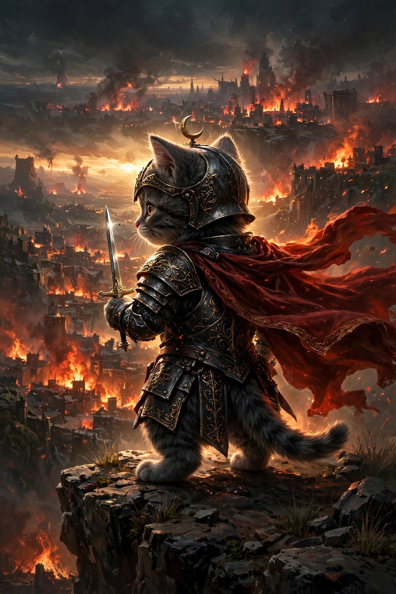

01
The Call
Problem & Research
Every quest begins with a constraint, not a feature list. A router with 128 MB of RAM, a modem that only speaks AT commands, a phone locked behind root — the limits write the spec.
I am raevtar — a developer from Kebumen, Indonesia, forging Go backends, Android & OpenWrt tooling and proxy systems that run close to the metal. Move your cursor through the embers — a small knight keeps watch in the dark.
79 open-source chronicles
github.com/latifangren

Every realm needs someone who tends the machinery beneath it. raevtar builds that machinery: proxy controllers for OpenWrt routers, management dashboards for Quectel 5G modems, container orchestration for rooted Android, and control panels light enough to run fully offline.
The oath is simple — no bloat shall pass. Single compiled Go binaries, embedded web UIs, zero-dependency shell toolkits, CGO-free builds. If it can run on a router with 128 MB of RAM, it probably should.
Five trials, one burning path. Every project — from modem dashboards to LLM gateways — walks the same road.
Problem & Research
Every quest begins with a constraint, not a feature list. A router with 128 MB of RAM, a modem that only speaks AT commands, a phone locked behind root — the limits write the spec.
Architecture & Design
Shape the system before the screens: process boundaries, data flow, failure modes — then a UI that stays honest about what the machine underneath is doing.
Go & Systems Code
Write it in Go, shell or TypeScript — compiled, CGO-free, dependency-light. One binary, embedded assets, nothing to install and nothing to phone home.
Motion & Interaction
Dashboards deserve craft too. Micro-interactions, live signal graphs, instant feedback — the interface should feel as fast as the binary behind it.
Release & Iterate
Publish it open, watch real hardware break it in new ways, fix, repeat. Seventy-nine chronicles in, the loop is the product.
The standouts from 79 public repositories — proxy infrastructure, modem tooling, Android system mods and one very fast LLM gateway. Open a record to inspect the campaign on GitHub.
Four pits, one rule: if it runs on constrained hardware, it can run anywhere. Expand a pit to see what is being raised inside.